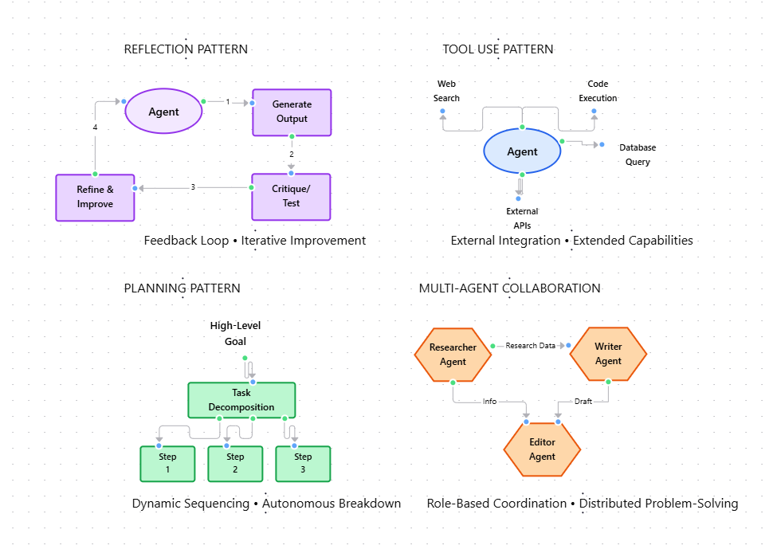

Module 1 — Episode 7
Training:Agentic AI Training
🎯 Learning Objectives
By the end of this episode, you will be able to:
- ✅ Identify and describe the four core design patterns in agentic workflows
- ✅ Implement reflection and tool-use patterns using LLMs
- ✅ Understand how planning and multi-agent collaboration improve workflow complexity and adaptability
🧭 Overview
This episode introduces the foundational design patterns that underpin agentic workflows.
It explains how developers can combine modular building blocks—such as reflection, tool use, planning, and multi-agent collaboration—to create adaptive, iterative, and intelligent systems.
These patterns are used in real-world applications like automated code generation, research assistants, and AI-driven software development pipelines.
🧱 Prerequisites
Readers should already understand:
- Basic concepts of LLMs (Large Language Models) and prompt engineering
- Familiarity with function calling or tool invocation in AI frameworks
- General understanding of workflow orchestration and automation systems
🔑 Core Concepts
- Reflection Pattern – A feedback loop where an agent critiques or tests its own output, improving quality through iteration.
- Tool Use Pattern – Enables an agent to call external tools or functions (e.g., code execution, web search) to complete tasks it cannot handle internally.
- Planning Pattern – Allows an agent to autonomously determine a sequence of actions or API calls to achieve a goal, rather than following a hardcoded script.
- Multi-Agent Collaboration Pattern – Involves multiple specialized agents working together, each with defined roles, to solve complex tasks collaboratively.
🖼 Visual Explanation
Four Core Agentic Design Patterns:  Visual Overview:The diagram presents four quadrants, each illustrating a foundational design pattern:
1. Reflection Pattern (Top-Left - Purple)- Shows the iterative feedback loop: Agent → Generate Output → Critique/Test → Refine & Improve → Back to Agent
- Key property: Feedback Loop • Iterative Improvement
- Enables self-correction and quality enhancement through multiple iterations
- Central agent connected to external tools: Web Search, Code Execution, Database Query, External APIs
- Key property: External Integration • Extended Capabilities
- Bridges the gap between LLM reasoning and real-world data/computation
- Hierarchical flow: High-Level Goal → Task Decomposition → Step 1, Step 2, Step 3
- Key property: Dynamic Sequencing • Autonomous Breakdown
- Enables agents to autonomously determine action sequences
- Three specialized agents (Researcher, Writer, Editor) communicating via message passing
- Key property: Role-Based Coordination • Distributed Problem-Solving
- Mimics human team structures for complex task handling
This four-quadrant diagram shows how each design pattern contributes to building intelligent, modular, and adaptive agentic workflows. Each pattern can be used independently or combined to create sophisticated AI systems capable of reflection, tool integration, autonomous planning, and collaborative problem-solving.
⚙️ Technical Breakdown
How It Works
1. Reflection- The agent generates an output (e.g., code snippet).
- The same or another agent critiques the output for errors or inefficiencies.
- Feedback is used to refine the result iteratively.
2. Tool Use- The agent identifies when it needs external data or computation.
- It invokes appropriate tools (e.g., web search, code execution).
- Results are integrated back into the reasoning process.
3. Planning- The agent decomposes a high-level goal into a sequence of actions or API calls.
- It dynamically determines dependencies and execution order.
- The plan is executed autonomously.
4. Multi-Agent Collaboration- Multiple agents with specialized roles (e.g., researcher, writer, editor) communicate.
- Each agent performs tasks aligned with its persona or expertise.
- Outputs are passed between agents until the task is complete.
Why It Works
- Feedback Loops Improve Quality: Reflection introduces iterative self-correction.
- External Tools Extend Capability: Tool use bridges the gap between reasoning and execution.
- Autonomous Planning Scales Complexity: Planning enables agents to handle multi-step goals dynamically.
- Collaboration Enhances Robustness: Multi-agent setups mimic human team structures, improving diversity of reasoning and creativity.
When To Use It
✅ Ideal Scenarios- Iterative content or code generation
- Research and data synthesis workflows
- Multi-step reasoning or task decomposition
- Collaborative creative or analytical tasks
- Deterministic, single-step outputs are sufficient
- Resource constraints prevent multi-agent orchestration
- Tool APIs are unreliable or latency-sensitive
Trade-offs & Limitations
- Reflection: May lead to overfitting or redundant iterations if feedback isn’t well-structured.
- Tool Use: Increases system complexity and dependency on external APIs.
- Planning: Harder to debug due to emergent behavior in dynamic task sequencing.
- Multi-Agent Collaboration: Coordination overhead and unpredictability in communication loops.
Performance Considerations
- Latency: Each iteration or agent interaction adds response time.
- Resource Usage: Multi-agent setups consume more compute and memory.
- Error Propagation: Faults in one agent or tool can cascade through the workflow.
- Optimization: Use caching, selective reflection, and controlled planning depth to balance performance and accuracy.
💻 Code Examples
Minimal Example — Reflection Pattern
from openai import OpenAI
client = OpenAI()
# Step 1: Generate initial code
initial_code = client.chat.completions.create(
model="gpt-4",
messages=[{"role": "user", "content": "Write a Python function to compute factorial."}]
).choices[0].message.content
# Step 2: Critique the generated code
critique = client.chat.completions.create(
model="gpt-4",
messages=[
{"role": "system", "content": "You are a code reviewer."},
{"role": "user", "content": f"Review this code for correctness and efficiency:\n{initial_code}"}
]
).choices[0].message.content
# Step 3: Refine code using feedback
refined_code = client.chat.completions.create(
model="gpt-4",
messages=[
{"role": "system", "content": "You are a Python developer improving code based on feedback."},
{"role": "user", "content": f"Original code:\n{initial_code}\n\nFeedback:\n{critique}\n\nPlease improve the code."}
]
).choices[0].message.content
print(refined_code)
Example — Multi-Agent Collaboration (Conceptual)
agents = {
"researcher": lambda topic: search_web(topic),
"writer": lambda info: generate_marketing_copy(info),
"editor": lambda text: polish_text(text)
}
topic = "AI-powered productivity tools"
research = agents["researcher"](topic)
draft = agents["writer"](research)
final_output = agents["editor"](draft)
print(final_output)
🧩 Summary
Agentic workflows can be constructed using four main design patterns:
| Pattern | Description | Example Use Case |
|---|---|---|
| Reflection | Self-evaluation and iterative improvement | Code review loops |
| Tool Use | Integrating external APIs or computation | Web search, code execution |
| Planning | Sequencing actions dynamically | Multi-step task automation |
| Multi-Agent Collaboration | Distributed problem-solving via specialized agents | Virtual software teams |
These patterns form the foundation for building sophisticated, adaptive AI systems capable of reasoning, acting, and improving over time.
🚀 Next Steps
Continue to Module 2 to explore the Reflection Design Pattern in depth — a simple yet powerful mechanism to significantly boost system performance through iterative self-improvement.